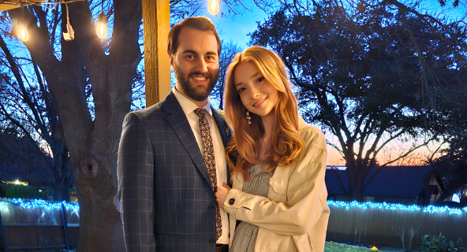

Daphne Rose Purcell Killpack
I'm newly wed, from Dallas Texas. I work for "Alice Laura Models" located in DTX
I love big cities and meeting artist minded individuals and creating visions with photographers.
My next persuit will be hopefully working behind the camera as a photographer.
I have 3 years experience as a lab technician, which sparked my love for the technical field
I'm a software engineer major and I love action movies.